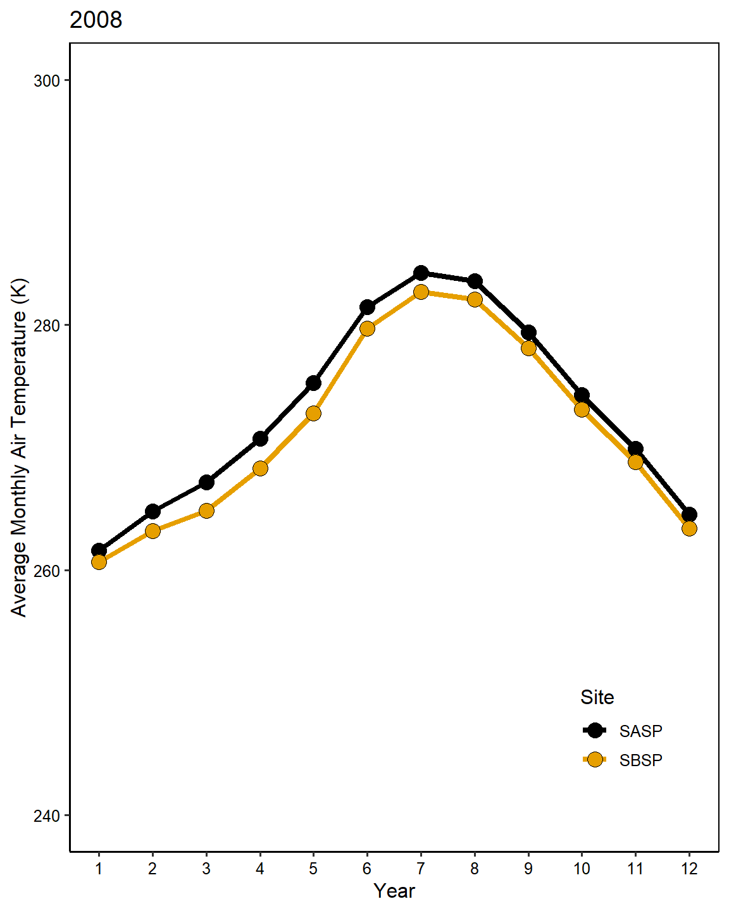
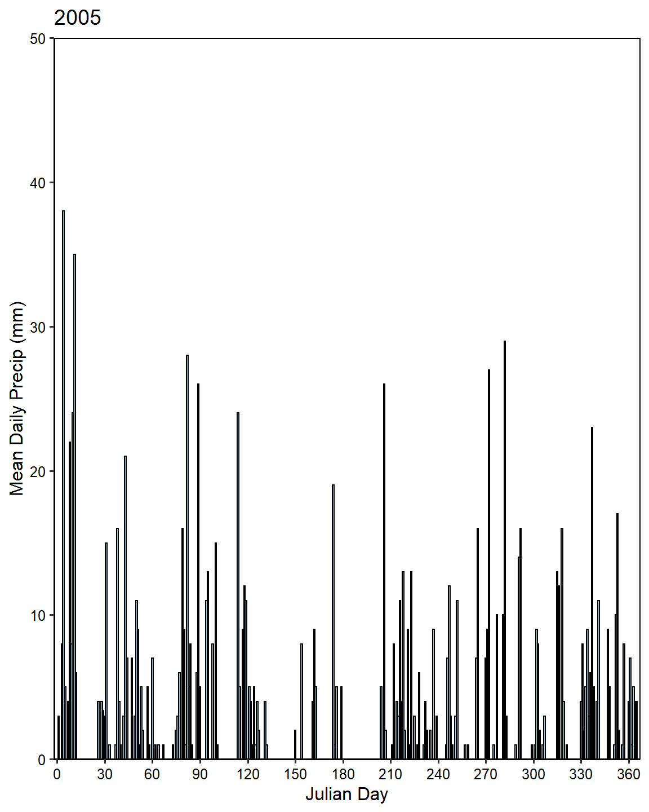

Chapter 3 Chapter 2 - Snow Studies Analysis
3.1 Question 1
Extract the meteorological data URLs from the Snow Studies Archive.
site_url <- 'https://snowstudies.org/archived-data/'
webpage <- read_html(site_url)
links <- webpage %>%
html_nodes('a') %>%
.[grepl('forcing',.)] %>%
html_attr('href')3.2 Question 2
Download and save the the meteorological data to disk.
labels <- links %>%
str_split_fixed("/", n = 8)
dataset <- labels[,8]
file.names <- paste0('data/',dataset)
map2(links[1:2],
file.names[1:2],
download.file)3.3 Question 3
Write a custom function to read in the data and append a site column to the data.
headers <- pdf_text('https://snowstudies.org/wp-content/uploads/2022/02/Serially-Complete-Metadata-text08.pdf') %>%
readr::read_lines(.) %>%
trimws(.) %>%
str_split_fixed(.,'\\.',2) %>%
.[,2] %>%
.[1:26] %>%
str_trim(side = "left")
Meteorological_Data_Download <- function(site.name){
file.index <- which(grepl(site.name, file.names) == T)
file.path <- file.names[file.index]
output <- read_fwf(file.path,
col_positions = fwf_empty(file.path),
show_col_types = F)
colnames(output) <- headers
output <- output[,1:14]
output <- output %>%
mutate(Site = site.name, .before = year)
assign(paste0(site.name, ".data2"), output, envir = parent.frame())
}3.4 Question 4
Use the map function to read in both meteorological files. Display a summary of your tibble.
sites <- c("SASP", "SBSP")
climate.data <- map_dfr(.x = sites[1:2],
.f = Meteorological_Data_Download)
knitr::kable(summary(climate.data))| Site | year | month | day | hour | minute | second | precip [kg m-2 s-1] | sw down [W m-2] | lw down [W m-2] | air temp [K] | windspeed [m s-1] | relative humidity [%] | pressure [Pa] | specific humidity [g g-1] | |
|---|---|---|---|---|---|---|---|---|---|---|---|---|---|---|---|
| Length:138336 | Min. :2003 | Min. : 1.000 | Min. : 1.00 | Min. : 0.00 | Min. :0 | Min. :0 | Min. :0.000e+00 | Min. :-9999.000 | Min. :-9999.0 | Min. :242.1 | Min. :-9999.000 | Length:138336 | Min. :63931 | Min. :1.650e-07 | |
| Class :character | 1st Qu.:2005 | 1st Qu.: 3.000 | 1st Qu.: 8.00 | 1st Qu.: 5.75 | 1st Qu.:0 | 1st Qu.:0 | 1st Qu.:0.000e+00 | 1st Qu.: -3.510 | 1st Qu.: 173.4 | 1st Qu.:265.8 | 1st Qu.: 0.852 | Class :character | 1st Qu.:63931 | 1st Qu.:1.908e-03 | |
| Mode :character | Median :2007 | Median : 6.000 | Median :16.00 | Median :11.50 | Median :0 | Median :0 | Median :0.000e+00 | Median : -0.344 | Median : 231.4 | Median :272.6 | Median : 1.548 | Mode :character | Median :65397 | Median :3.006e-03 | |
| NA | Mean :2007 | Mean : 6.472 | Mean :15.76 | Mean :11.50 | Mean :0 | Mean :0 | Mean :3.838e-05 | Mean :-1351.008 | Mean :-1325.7 | Mean :272.6 | Mean : -790.054 | NA | Mean :65397 | Mean :3.561e-03 | |
| NA | 3rd Qu.:2009 | 3rd Qu.: 9.000 | 3rd Qu.:23.00 | 3rd Qu.:17.25 | 3rd Qu.:0 | 3rd Qu.:0 | 3rd Qu.:0.000e+00 | 3rd Qu.: 294.900 | 3rd Qu.: 272.2 | 3rd Qu.:279.7 | 3rd Qu.: 3.087 | NA | 3rd Qu.:66863 | 3rd Qu.:4.731e-03 | |
| NA | Max. :2011 | Max. :12.000 | Max. :31.00 | Max. :23.00 | Max. :0 | Max. :0 | Max. :6.111e-03 | Max. : 1341.000 | Max. : 365.8 | Max. :295.8 | Max. : 317.300 | NA | Max. :66863 | Max. :1.478e-02 |
3.5 Question 5
Make a line plot of mean temp by year by site (using the air temp [K] variable). Is there anything suspicious in the plot? Adjust your filtering if needed.
mean.temp <- climate.data %>%
filter(year != 2003) %>%
group_by(Site, year) %>%
summarise(Mean_Temp = mean(`air temp [K]`, na.rm = TRUE))
ggplot(data = mean.temp, aes(x = year, y = Mean_Temp)) +
geom_line(aes(color = Site),
size = 1.5) +
geom_point(shape = 21,
size = 4,
aes(fill = Site)) +
scale_fill_colorblind() +
scale_color_colorblind() +
scale_x_continuous(name = "Year",
breaks = seq(2003, 2011)) +
ylab("Average Annual Air Temperature (K)") +
theme_classic2() +
theme(panel.border = element_rect(fill = NA),
axis.text = element_text(color = "black"),
legend.position = c(0.85,0.15))3.6 Question 6
Write a function that makes line plots of monthly average temperature at each site for a given year. Use a for loop to make these plots for 2005 to 2010. Are monthly average temperatures at the Senator Beck Study Plot ever warmer than the Snow Angel Study Plot?
Avg_Temp_Plotter <- function(Year){
temp.temp.data <- climate.data %>%
group_by(Site, year, month) %>%
summarise(Monthly_Mean = mean(`air temp [K]`)) %>%
filter(year == Year)
temp.plot <- ggplot(data = temp.temp.data, aes(x = month, y = Monthly_Mean)) +
geom_line(aes(color = Site),
size = 1.5) +
geom_point(shape = 21,
size = 4,
aes(fill = Site)) +
scale_fill_colorblind() +
scale_color_colorblind() +
scale_x_continuous(name = "Year",
breaks = seq(1,12)) +
scale_y_continuous(name = "Average Monthly Air Temperature (K)",
limits = c(240, 300)) +
ggtitle(label = Year) +
theme_classic2() +
theme(panel.border = element_rect(fill = NA),
axis.text = element_text(color = "black"),
legend.position = c(0.85,0.15))
print(temp.plot)
}
years <- seq(2005, 2010)
for (i in 1:length(years)){
Avg_Temp_Plotter(years[i])
}
3.7 Question 7
Make a plot of average daily precipitation by day of year (averaged across all available years). Color each site.
daily.precipitation <- climate.data %>%
mutate(Date = paste0(day,"/", month, "/", year)) %>%
mutate(Date = as.Date(Date, format = "%d/%m/%Y")) %>%
mutate(DOY = yday(Date)) %>%
mutate(Precip_mm = `precip [kg m-2 s-1]` * 86400) %>%
group_by(Site, DOY) %>%
summarize(Mean_Precip = mean(Precip_mm))
ggplot(daily.precipitation[daily.precipitation$Site == "SASP",], aes(x = DOY, y = Mean_Precip)) +
geom_col(color = "black",
fill = "lightblue") +
scale_x_continuous(name = "Julian Day",
limits = c(-2, 367),
breaks = seq(0, 360, 30),
expand = c(0,0)) +
scale_y_continuous(name = "Mean Daily Precip (mm)",
limits = c(0, 15),
expand = c(0,0)) +
theme_classic2() +
theme(panel.border = element_rect(fill = NA),
axis.text = element_text(color = "black"),
legend.position = c(0.85,0.15))3.8 Question 8
Use a function and for loop to create yearly plots of precipitation by day of year. Color each site.
Yearly_Precip <- function(input.year){
precip.out <- climate.data %>%
filter(year == input.year) %>%
filter(Site == "SASP") %>%
mutate(Date = paste0(day,"/", month, "/", year)) %>%
mutate(Date = as.Date(Date, format = "%d/%m/%Y")) %>%
mutate(DOY = yday(Date)) %>%
mutate(Precip_mm = `precip [kg m-2 s-1]` * 86400) %>%
group_by(DOY) %>%
summarize(Mean_Precip = mean(Precip_mm))
}
for(i in 1:length(unique(climate.data$year))){
annual.precip <- Yearly_Precip(unique(climate.data$year)[i])
plot <- ggplot(data = annual.precip, aes(x = DOY, y = Mean_Precip)) +
geom_col(color = "black",
fill = "lightblue") +
scale_x_continuous(name = "Julian Day",
limits = c(-2, 367),
breaks = seq(0, 360, 30),
expand = c(0,0)) +
scale_y_continuous(name = "Mean Daily Precip (mm)",
limits = c(0, 50),
expand = c(0,0)) +
ggtitle(label = unique(climate.data$year)[i]) +
theme_classic2() +
theme(panel.border = element_rect(fill = NA),
axis.text = element_text(color = "black"),
legend.position = c(0.85,0.15))
print(plot)
}